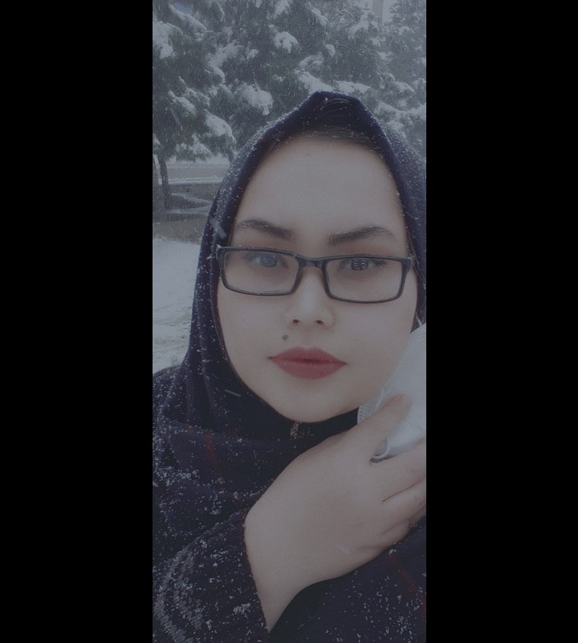

Zahra Nazari
Personal Details
Nationality: Afghan
Marital Status: Single
Date and Place of Birth: 1996/05/05, Parwan Province
Degree: M.D.
Phone: +93 782 714 750
Email: Nazari673@gmail.com
Education
- 2016–2022: M.D., Khatam-al Nabieen University, Kabul, Afghanistan. GPA: 4
- 2015: 12th Grade, Iranian Private High School, Sharjah, UAE. GPA: 4
Current Positions
- Researcher & Graphic Designer at KNERI
- Medical Doctor & Sonographer at Dr. Haidar Sazgar Infertility Clinic
Research Experience
- Since 2024: Research on sleep quality among PCOS patients – KNERI
- 2022–2024: Systematic review on medicinal plants and cognition – KNERI
- 2021–2022: Thesis on Chehelghoza and memory in rats – KNURTC
- 2021–2022: Researcher in cognitive neuroscience projects – KNURTC
Publications
Peer-reviewed Articles
- Alami K, Nazari N, Bayat R, et al. *Cognitive Effects of Almond Consumption*. Nutrition and Dietary Supplements. 2024;16:105-128. DOI
- Nazari Z, et al. *Infertility and Hyperprolactinemia: A Case Report*. Kavosh Journal (Accepted).
Conferences
- *Almonds mitigate cadmium-induced memory impairment*. 13th Neuroscience Congress, Tehran, Iran (Poster)
Books
- Specialty Exam Preparation Book – According to the Ministry of Public Health Entrance Exam Reference - (1399–1400)
Skills
Lab Skills
- Rodent handling, injections
Software & Design
- MS Office, SPSS, Adobe Suite, CorelDRAW
- Web Design: HTML, CSS, JS, Python, WordPress
Languages
- Persian – Native
- English – Intermediate
- Arabic – Basic
Academic & Professional Experience
- Teaching Assistant & Mentor at KNERI (Since 2024)
- Workshop Instructor: Review Articles, Case Reports (Since 2024)
- Graphic & Web Designer for Academic Networks (2021–2024)
- Research Group Leader (Since 2022)
Experiences
- Since 2024: Teacher assistant at Kavosh Non-profit Educational-Research Institute, Kabul, Afghanistan
- Since 2024: Mentor of workshops for writing review articles, questionnaire research, and case reports at Kavosh Non-profit Educational-Research Institute, Kabul, Afghanistan
- Since 2023: Graphic designing for Kavosh Non-profit Educational-Research Institute
- Since 2022: Managing student research groups
- 2023/09/25 - 2023/10/25: Web designing for a network team in Telegram
- 2021-2022: Graphic designing for a network team in Instagram
Honors and Awards
- Certificate of Appreciation from Kavosh Educational-Research Institute for outstanding dedication and teamwork, Kabul, Afghanistan, 2024
- Leadership of the student group for research at Neuroscience Research Center, Kavosh Non-profit Educational-Research Institute (KNERI), Kabul, Afghanistan
- Graduated with distinction in M.D. program, Khatam-al Nabieen University, Kabul, Afghanistan, 2020
- Certificate of Appreciation from the Meshrano Jirga (House of Elders), National Assembly of Afghanistan, presented by the Chairperson of the Women's Affairs and Civil Society Commission, in recognition of outstanding contributions to scientific research and academic excellence, Kabul, Afghanistan
- Certificate of Appreciation for ranking second overall in the Faculty of Curative Medicine at Khatam-al Nabieen University, Kabul, Afghanistan, 2016
Interests and Hobbies
- Research interest: Cognitive neuroscience, Medicinal plants
- Graphic: Poster, Digital art, retouching and 3D
- Photography: Passionate about capturing natural landscapes and skilled in using composition techniques and editing to highlight the beauty of the environment.
Certificates
- Certificate of Attendance in “A Comprehensive Program for Researcher Training” (presented by Neuroscience Research Center In September 2022-February 2024)
- Certificate of Graphic design in Adobe Illustrator and Corel Draw (2021 Khatam-al Nabieen and 2024 Code to Inspire Graphic Design Center)
- Certificate of completion of the Web Design course (2023/09/25 to 2023/10/25 Date from Head of Language Training and Skill Development Center)
- Certificate for ultrasound training at Atique-Allah Amarkhil General and Obstetrics & Gynecology Clinic (from 2021 to 2023)
- The potential and advancement of neuro-nutraceuticals in brain health (9 September 2022, IBRO Global Neuroscience Horizons Webinar Series)
References
- Sayed Yousof Mousavi: Assistant Professor, Department of Physiology, Khatam Al-Nabieen University, Kabul, Afghanistan. Phone: +93(0)796850084, Email: Mousavi.KNURTC@knu.edu.af